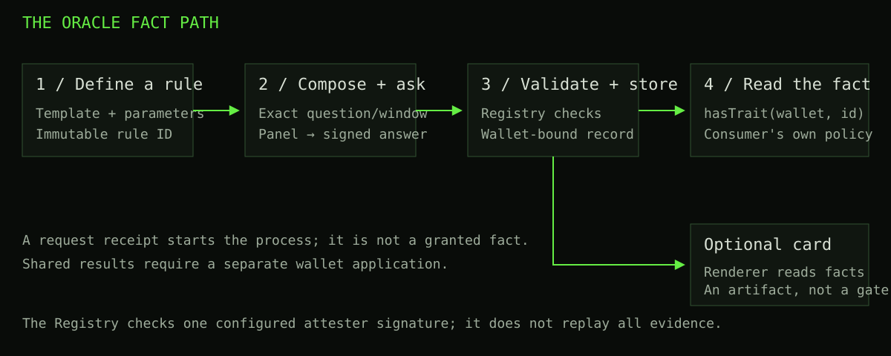

Sworn makes a defined statement about an Ethereum wallet available to other applications through a contract read. Some statements come directly from WhitelistCurator. Others require an IMD oracle answer that passes the Registry’s checks. A collectible card can render the wallet’s facts, but a wallet does not need a card to hold or use them.
This handbook explains how to use that system, what is distinctive about its design, and when a simpler mechanism may be a better fit. It documents the launch-2404 contracts at source commit c4ff3238390fc51962fb67e86affc20cf418126e, with a separate explanation of the revised local mock. It does not report a fresh mainnet-state audit or endorse a payment. Pinned contract source.
Start with three distinctions
| Term | Meaning | What it does not mean |
|---|---|---|
| Rule | An immutable definition of what to check, including the evidence window and supported template. | A wallet has already satisfied it. |
| Fact | A predicate the authentic Registry currently reports for a wallet. Oracle facts require accepted evidence. | A free-floating claim, a guaranteed truth, or a unique-human identity. |
| Card | A transferable visual artifact associated with its original claimant. | Transferable ownership of that claimant’s credentials. |
The revised interface calls the tasks Mint Card, Mint Facts, and Mint Rule. “Mint Facts” means recording an accepted wallet fact in the Registry contract. It does not put a fact inside an NFT: the card reads the Registry when producing its artwork. Submission alone does not establish a fact; only an accepted stored result does. A shared result must also be applied to the wallet. User guide.
How the pieces connect

For a direct fact, the Registry uses the Curator-based read or the wallet’s frozen mint snapshot instead of an oracle. The diagram’s panel path describes oracle facts. The Registry authenticates a configured signer and validates the answer’s bindings; it does not independently replay the entire historical computation. Architecture and trust assumptions.
Choose a reading path
- I want to understand or use Sworn: start with the user guide. It covers the Curator origin, fact classes, minting, community examples, the card and recovery.
- I want to assess the design: read architecture and alternatives. It compares Merkle allowlists, signed vouchers, NFT gates, attestation registries and cryptographic proofs without claiming that one replaces all the others.
- I want to integrate it: use Build with Sworn. It includes read signatures, an authenticated-wallet gate, a reproducible allowlist procedure and the shared-list delivery path.
- I need exact names and limits: use the reference, including the deployment, catalog, template limits and source inventory.
The Full handbook link combines the chapters into one printable document. The Markdown download contains the same text. Search works locally over the bundled chapters; it sends no query to an external service.
Why this design may be useful
Consider two projects that both want to recognize wallets that participated in a historical activity. Each could publish its own list. Sworn instead offers a common predicate whose rule and accepted evidence can be inspected and reused. Projects still choose their own eligibility policy; sharing a predicate does not force them to share a distribution or trust every fact.
That separation is the central idea: define the question once, preserve its evidence context, and let several consumers read the same wallet-level result. The optional card makes those facts visible without becoming the authorization mechanism. This is a design combination, not a claim that registries, oracles, NFTs or reusable attestations were invented by Sworn.
There are costs. Oracle results depend on the configured service and signer. A historical fact is not a continuously refreshed balance. Public predicates disclose information. For a one-off distribution to an already agreed list, a Merkle tree can be simpler and cheaper to operate. A useful hybrid is to evaluate Sworn predicates at one block, apply a project’s allocation policy, and publish that exact snapshot as a Merkle root. Decision guide.
Try the local version
The revised local mock demonstrates delayed wallet transactions, panel progress, community rules, card rendering and curator consumption. It uses synthetic data, eight known wallet fixtures and scripted oracle outcomes. The close button hides a verification overview without deleting its result from Review transaction steps. Its artwork approximates parts of the deployed Renderer.
The mock’s successful journey is an interface demonstration. It is not a mainnet credential, a real oracle run, a complete Ethereum wallet index or a production safety certificate. The documentation itself never connects a wallet or submits a request. The public Sworn site is a separate deployment, and its interface may differ from the local revision.
Reused material and evidence dates
This edition builds on the three earlier how-to threads, the content/storyline review, the four-wallet worked example, the verified community-template examples, and the mint/curator reviews. Their useful explanations are retained; stale language and mock limitations are corrected.
The reused chain examples are explicitly dated 24 October 2026, Ethereum block 26,264,861. They are historical observations, not automatically refreshed claims about today. In particular, the old example showing no community facts does not establish that no community facts exist now. Source and evidence inventory.